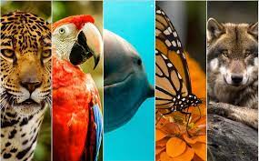

HOLA BIENVENIDOS A MI PAGINA WEB SOBRE ESPECIES EN PELIGRO DE EXTINCIÓN, HABLAREMOS SOBRE ALGUNAS ESPECIES MEXICANAS ESPERO TE SEA INTERESANTES.
Se considera en peligro de extinción a una especie animal cualquiera, cuando su existencia y reproducción no se puede desarrollar en ninguna parte del mundo. Es decir que ya nunca se podrá volver a ver. Esto es debido generalmente a la terminación de un recurso del cual dependen todas y cada una de las especies, ya sea por acción del hombre, como la caza ilegal o la tala de indiscriminada de árboles, o simplemente por cambios en el ecosistema de la especie que son fruto de hechos fortuitos, como lo es el cambio climático.

México es un país con una gran biodiversidad. A pesar de ello, ya sea por el cambio climático, la caza furtiva por parte de los seres humanos, la intervención humana en los ecosistemas y otros factores, existen diversas especies animales y vegetales mexicanas que están en peligro de extinción, lo cuál es uno de los motivos por los que este 5 de junio se celebra el Día Mundial del Medio Ambiente. Es importante recordar la urgencia de combatir las actividades que dañan y afectan a la naturaleza, las cuales tienen lugar en todo el mundo. Por esa razón, aunque no son todas, te compartimos las 10 especies mexicanas más emblemáticas que están en riesgo de extinguirse.